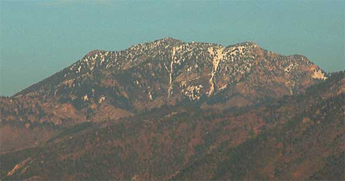
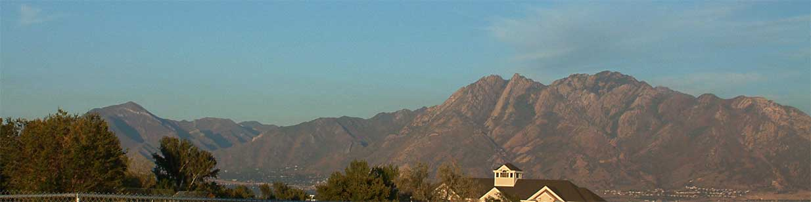
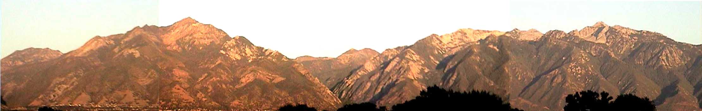
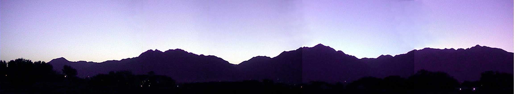
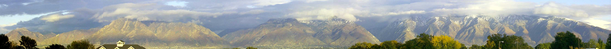
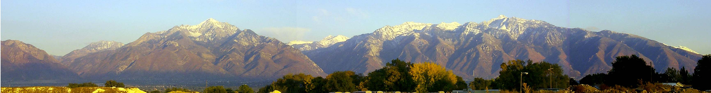
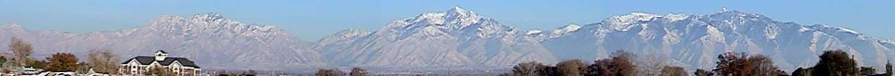
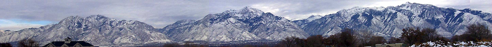
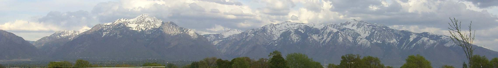
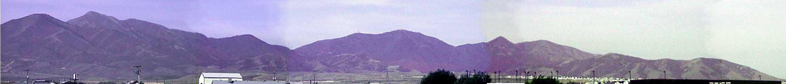

Image of Lone Peak, viewed from West Jordan in the autumn afternoon, 2002
Image of Lone Peak, viewed from West Jordan in the autumn afternoon, 2002

Image of Kessler Peak, viewed from West Jordan in the autumn afternoon, 2002

Image of the range from Grandeur peak (left) to Mount Olympus (right), viewed from West Jordan in the autumn afternoon, West Jordan City Hall in foreground

Image of mountains September 11, 2000 in late afternoon.

Image of mountains October 2, 2000 at dawn.

Image of mountains October 13, 2000 with clouds.

Image of mountains October 15, 2000 in late afternoon.

Image of mountains November 19, 2000 in mid afternoon.

Image of mountains December 16, 2000 in cloudy midday.

Image of mountains April 28, 2001 in cloudy midday.

Image of mountains Autumn 1995 in the afternoon with the moon rising.

Image of the Oquirrh mountains October 2, 2000 in mid-morning.
Last updated 8 Oct. 2002 - jfb
{kind=link}
{kind=link}
{kind=link}
{kind=link}
{kind=link}
{kind=link}
{kind=link}
{kind=link}
{kind=link}
{kind=link}